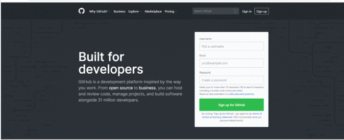

GitHub là một hệ thống quản lý dự án và phiên bản code, hoạt động giống như một mạng xã hội cho lập trình viên. Nhưng cách sử dụng GitHub như thế nào? Nó sử dụng để hợp tác nhiều người lại với nhau, từ mọi nơi trên thế giới, lên kế hoạch, theo dõi và làm chung một dự án. GitHub cũng là một nền tảng lưu trữ online lớn nhất trên thế giới về các dự án nhiều người làm.
GitHub là tên gọi của một Hệ thống quản lý phiên bản phân tán (Distributed Version Control System – DVCS) là một trong những hệ thống quản lý phiên bản phân tán phổ biến nhất hiện nay. DVCS nghĩa là hệ thống giúp mỗi máy tính có thể lưu trữ nhiều phiên bản khác nhau của một mã nguồn được nhân bản (clone) từ một kho chứa mã nguồn (repository), mỗi thay đổi vào mã nguồn trên máy tính sẽ có thể ủy thác (commit) rồi đưa lên máy chủ nơi đặt kho chứa chính. Và một máy tính khác (nếu họ có quyền truy cập) cũng có thể clone lại mã nguồn từ kho chứa hoặc clone lại một tập hợp các thay đổi mới nhất trên máy tính kia. Trong Git, thư mục làm việc trên máy tính gọi là Working Tree.
Git là gì?
Trước tiên, chúng ta cần phải biết rõ Git là gì trước, vì nó là trái tim của GitHub. Git là một hệ quản trị phiên bản được phát triển bởi Linus Torvalds (tên rất quen phải không, người tạo ra Linux đó).
Vậy, hệ quản trị phiên bản – version control system là gì?
Khi lập trình viên tạo một dự án mới, họ sẽ cần liên tục cập nhật mã nguồn. Kể cả khi dự án đã được xuất bản, họ vẫn cần phải cập nhật các phiên bản mới cho nó, sửa lỗi, thêm tính năng, vâng vâng.
Hệ quản trị phiên bản sẽ giúp giám sát những thay đổi của code. Hơn thế nữa, nó còn lưu lại thông tin ai thay đổi gì để có thể khôi phục code cũ bị xóa hoặc code đã từng được sửa.
Codes không được ghi đè lên nhau vì Git lưu nhiều phiên bản copies trong repository (thư viện) của nó.
Hub là gì?
Nếu Git là trái tim của GitHub thì Hub lại là phần hồn của nó. Hub trong GitHub là nơi biến những dòng lệnh, Git, thành một mạng xã hội khổng lồ cho lập trình viên.
Bên cạnh đóng góp vào những dự án chính, GitHub còn cho phép người dùng tương tác theo kiểu mạng xã hội. Bạn có thể theo dõi, và xem những người bạn thích làm gì, họ đang kết nối với ai, vâng vâng.
Repository
Repository hay repo là một thư viện nơi chứa các files của dự án. Nó có thể đặt trong bộ lưu trữ của GitHub hoặc trong repository của máy tính local. Bạn có thể chứa files code, hình ảnh, âm thanh hoặc mọi thứ liên quan đến dự án trong một repository.
Branch
Branch là một bản sao của repository. Bạn có thể sử dụng Branch để triển khai dự án theo hướng cô lập không ảnh hưởng đến dự án chính.
Làm việc với branch vì vậy sẽ không ảnh hưởng tới repostiroy chính hoặc những branches khác. Nếu bạn hoàn tất công việc, bạn có thể “Merge” (nhập) branch vào những branch khác khoặc repository chính bằng cách dùng lệnh Pull Request.
Pull Request
Pull request có nghĩa là bạn thông báo với những người khác rằng bạn đã đẩy những thay đổi của Branch lên Repository tổng (master respository). Các cộng tác viên của repository này ẽ có chấp nhật hoặc từ chối pull request này. Khi nó được mở ra, bạn có thể thảo luận và xem lại công việc với những người cùng làm khác.
Có rất nhiều lợi thế để bạn nên sử dụng Git trong việc lập trình ngay từ hôm nay, bất kể là lập trình cái gì đi chăng nữa :